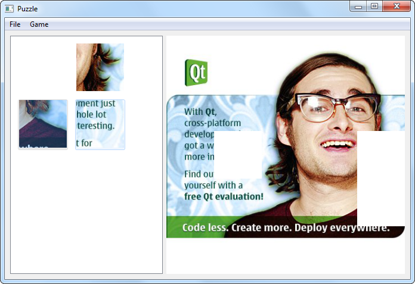

Drag and Drop Puzzle Example
The Drag and Drop Puzzle example demonstrates a way of using the drag and drop system with item view widgets.

This example is an implementation of a simple jigsaw puzzle game using Qt's drag and drop API. The Item View Puzzle example shows many of the same features, but takes an alternative approach that uses Qt's model/view framework to manage drag and drop operations.
Files: